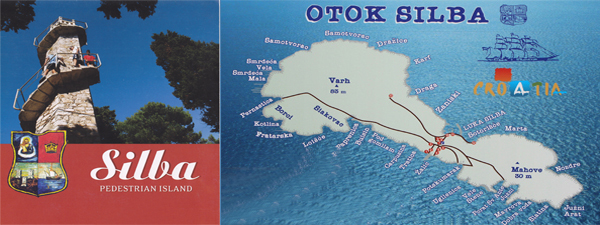

|  |
| Otok Silba |
Island of Silba is situated in the Zadar archipelago, south-east of Island Mali Losinj, between the neighboring islands of Olib in the East and Premuda in the West.It belongs to the group of smaller-size inhabited Croatian islands.
Its surface is about 15 sq/km and the length is 8.5 km.The highest point of the island is Varh (80m).The settelment is situated in the narrowest part of the island (0.7km).
The closest city on the mainland is Zadar (about 30 nautical miles away).Boats and ferrys from Zadar sail every day and the trip lasts form 1,5 hour (catamaran) to 4,5 hours (ferry).
Island of Silba if full of Mediterranean vegetation and aromatic herbs. You can enjoy in pleasant vacation in the untouched nature (Silba has been nominated for Nature park status). All accommodations are only few minutes away from beautiful sandy or gravelled beaches.
There are no roads for cars or motorcycles on Silba, so peace and quiet help you to relax and enjoy every second of your vacation. That is one of the reasons why Silba attracts tourists. The other reason is Adriatic sea because of its incredible clearness and warmness during the summer.
Source: Silba.org
Social media: